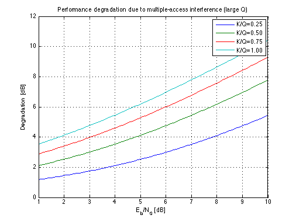

Performance degradation due to multiple-access interference (large Q)
Copyright 2007 Telecommunications Lab
EB_N_dB=[0:.1:10]; EB_N_lin=10.^(0.1*EB_N_dB); Q=1000; i=1; for (K_Q=.25:.25:1), Dg_lin(i,:)=(1+(K_Q-1/Q)*EB_N_lin); Dg(i,:)=10*log10(Dg_lin(i,:)); i=i+1; end
plot(EB_N_dB, Dg(1,:),EB_N_dB, Dg(2,:),EB_N_dB, Dg(3,:),EB_N_dB, Dg(4,:),'LineWidth',1.5); legend('K/Q=0.25','K/Q=0.50','K/Q=0.75','K/Q=1.00') title('Performance degradation due to multiple-access interference (large Q)') xlabel('E_b/N_0 [dB]') axis([1 10 0 12]) ylabel('Degradation [dB]') grid on;